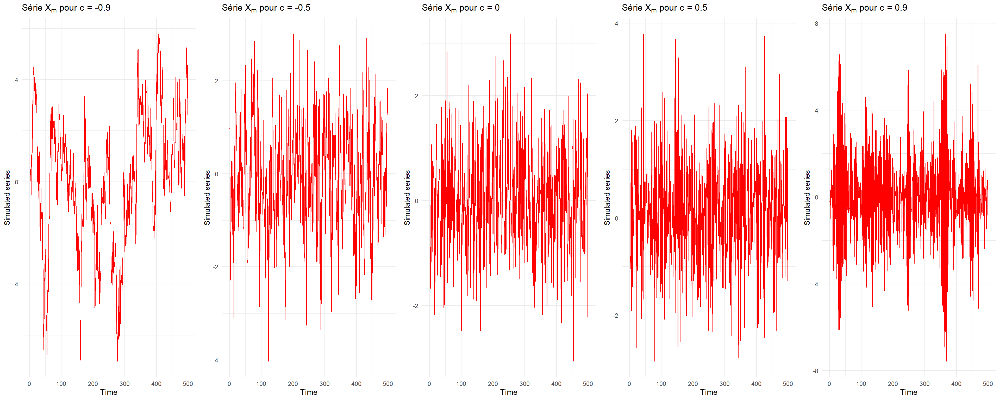
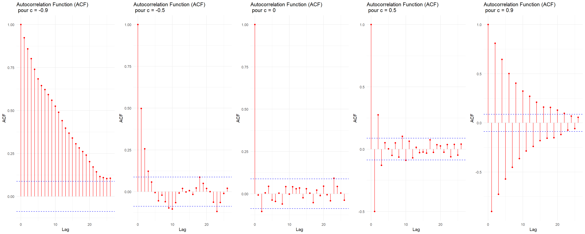
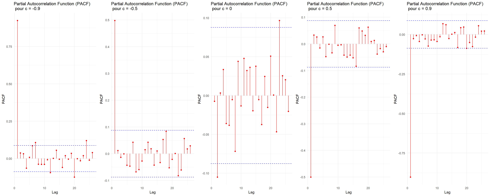

Show the code
# Données
library(dplyr) # manipulation des données
# Esthétique
library(latex2exp) ## TeX
library(ggplot2) ## ggplot# Données
library(dplyr) # manipulation des données
# Esthétique
library(latex2exp) ## TeX
library(ggplot2) ## ggplotSim_serie <- function(m, c) {
eps <- rnorm(m + 100)
x <- rep(NA, m + 100)
# On suppose pour notre condition initial
x[1] <- eps[1]
for (i in (2:(m + 100))) {
x[i] <- eps[i] - c * x[i - 1]
}
x_final <- x[101:(m + 100)]
return(ts(x_final))
}ggTimeSerie <- function(ts, c) {
df_series <- data.frame(Time = seq_along(ts), X_t = ts)
p <- ggplot(df_series, aes(x = Time, y = X_t)) +
geom_line(color = "red") +
labs(title = TeX(paste0(
"Série $X_m$ pour c = ", c
)),
x = "Time",
y = "Simulated series") +
theme_minimal()
return(p)
}ggACF <- function(ts, c) {
acf_data <- acf(ts, plot = FALSE)
df_acf <- data.frame(Lag = acf_data$lag, ACF = acf_data$acf)
pacf_data <- pacf(ts, plot = FALSE)
df_pacf <- data.frame(Lag = pacf_data$lag, PACF = pacf_data$acf)
# Intervalle de confiance
ci <- qnorm((1 + 0.95) / 2) / sqrt(length(ts))
# ACF
p_acf <- ggplot(df_acf, aes(x = Lag, y = ACF)) +
geom_segment(aes(xend = Lag, yend = 0), color = "red") +
geom_point(color = "red") +
labs(
title = paste0("Autocorrelation Function (ACF) \n pour c = ", c),
x = "Lag",
y = "ACF"
) +
geom_hline(
yintercept = c(-ci, ci),
color = "blue",
linetype = "dashed"
) +
theme_minimal()
# PACF
p_pacf <- ggplot(df_pacf, aes(x = Lag, y = PACF)) +
geom_segment(aes(xend = Lag, yend = 0), color = "red") +
geom_point(color = "red") +
labs(
title = paste0("Partial Autocorrelation Function (PACF) \n pour c = ", c),
x = "Lag",
y = "PACF"
) +
geom_hline(
yintercept = c(-ci, ci),
color = "blue",
linetype = "dashed"
) +
theme_minimal()
return(list(ACF = p_acf, PACF = p_pacf))
}set.seed(140400)Pour cette exercice, nous allons utiliser une fonction pour simuler des trajectoires de processus défini par l’équation de récurrence \(X_m + cX_{m−1} = \varepsilon_m\) où \((\varepsilon_m)\) est une suite de variables aléatoires centrées iid (indépendantes et identiquement distribuées).
Pour obtenir une série de longueur \(m\), simuler \(m + 100\) valeurs et supprimer les \(100\) premières valeurs pour atténuer l’effet de l’initialisation, nous pouvons utiliser la fonction filter.
Notre objectif ici va être, pour \(|c| = 0, .5, .9\), de tracer une trajectoire simulée afin d’observer l’impact de \(c\) dans celle ci.
m <- 500
c <- c(-0.9, -0.5, 0, 0.5, 0.9)
Sim_mat <- list()
for (i in seq_along(c)){
Sim_mat[[i]] <- Sim_serie(m, c[i])
}gridExtra::grid.arrange(ggTimeSerie(Sim_mat[[1]], c[1]),
ggTimeSerie(Sim_mat[[2]], c[2]),
ggTimeSerie(Sim_mat[[3]], c[3]),
ggTimeSerie(Sim_mat[[4]], c[4]),
ggTimeSerie(Sim_mat[[5]], c[5]),
ncol = 5)
gridExtra::grid.arrange(ggACF(Sim_mat[[1]], c[1])$ACF,
ggACF(Sim_mat[[2]], c[2])$ACF,
ggACF(Sim_mat[[3]], c[3])$ACF,
ggACF(Sim_mat[[4]], c[4])$ACF,
ggACF(Sim_mat[[5]], c[5])$ACF,
ncol = 5)
Résultats
On remarque qu’au moment où nos paramètres sont proche de \(1\) ou \(-1\), nos autocorrélations sont forte et notre série perd en stationnarité. En effet, on remarque que le processus est un AR(1) avec son acf qui décroit exponentiellement et la stationnarité se perd quand \(|c| \longrightarrow 1\).
On remarque également que, qand \(c=0\), on a un bruit blanc.
gridExtra::grid.arrange(ggTimeSerie(Sim_mat[[1]], c[1]),
ggTimeSerie(Sim_mat[[2]], c[2]),
ggTimeSerie(Sim_mat[[3]], c[3]),
ggTimeSerie(Sim_mat[[4]], c[4]),
ggTimeSerie(Sim_mat[[5]], c[5]),
ncol = 5)
gridExtra::grid.arrange(ggACF(Sim_mat[[1]], c[1])$PACF,
ggACF(Sim_mat[[2]], c[2])$PACF,
ggACF(Sim_mat[[3]], c[3])$PACF,
ggACF(Sim_mat[[4]], c[4])$PACF,
ggACF(Sim_mat[[5]], c[5])$PACF,
ncol = 5)
Résultats
encore une fois, On reconnait alors les caractéristiques d’un AR(1) au vu des ACF et PACF. Et le cas de \(c=0\) apparait plus clairement comme celui d’un bruit blanc.
ici on a pu voir l’impact du paramètre c dans les séries de type AR(1) via les ACF et PACF.
sessioninfo::session_info(pkgs = "attached")─ Session info ───────────────────────────────────────────────────────────────
setting value
version R version 4.2.1 (2022-06-23 ucrt)
os Windows 10 x64 (build 22631)
system x86_64, mingw32
ui RTerm
language (EN)
collate French_France.utf8
ctype French_France.utf8
tz Europe/Paris
date 2025-03-03
pandoc 3.2 @ C:/Program Files/RStudio/resources/app/bin/quarto/bin/tools/ (via rmarkdown)
─ Packages ───────────────────────────────────────────────────────────────────
package * version date (UTC) lib source
dplyr * 1.1.4 2023-11-17 [1] CRAN (R 4.2.3)
ggplot2 * 3.5.1 2024-04-23 [1] CRAN (R 4.2.3)
latex2exp * 0.9.6 2022-11-28 [1] CRAN (R 4.2.3)
[1] C:/Users/cleme/AppData/Local/R/win-library/4.2
[2] C:/Program Files/R/R-4.2.1/library
──────────────────────────────────────────────────────────────────────────────